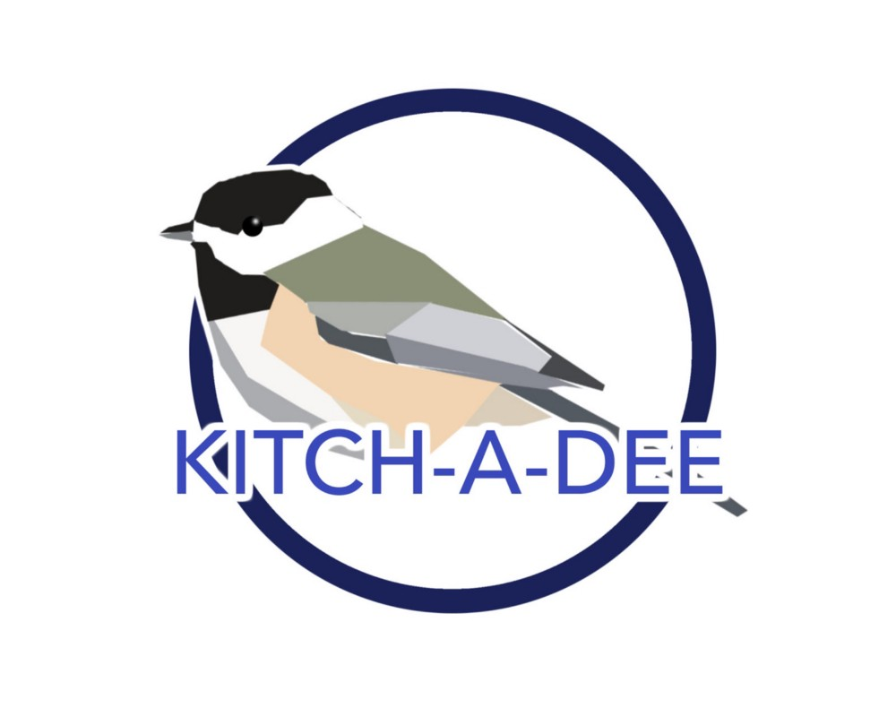
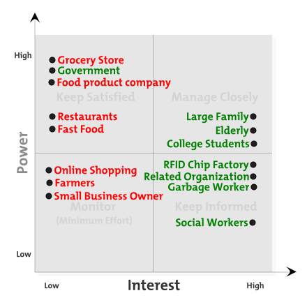

KITCH-A-DEE(revised)
@INFO 200 Class Final Project, Winter 2017
Problem Statment
- Who: Average American Households
- roughly $2.2k worth of food is wasted every year
- Overbuying food
- Expired Food
- Food not stored properly
- Lack of planning
- What: Food Waste
- 40% of the food is wasted annually in the US
- 40-50% of the wasted food come from consumers
- 20% of the wastes in landfill is food
- Why: Wasteful
- Economically, the amount of money wasted on food could have been put to better use. It also make the price of food more expensive.
- Environmentally, food wastes in landfill creates large amount of methan which could lead to global warming and climate change. It also wasted the resources we used to grow and make food.
- Ethically, 1 in 6 Americans are food insecure, meaning they lack access to enough food. Wastng food is "luxury" and it's our duty to take care of those who's in need
User Research
Our project focused mainly on average American Households.
- Family with kids
- Young couple
- Elderly
- People who live alone
- College students who share a house
-
Here's a list of questions we asked and what we found:
- How often do you go grocery shopping?
Most of the respondents purchase groceries once a week, or more frequently. 13.5% purchase groceries twice a month, and one outlier purchases groceries less than once a month. Interesting, only 13.5% of the people said they never overbuy food.
- How often do you find expired food in your fridge?
8.1% of the people said never. 64.9% of the food wastes come from fruits and vegetables.
- How much money is wasted annually on food in your household?
Surprisingly, majority of the family gave an number that was below average("better-than-average effect"). In fact, only 19.4% of people think they waste more than average.
- Do you throw out products on the sell-by date?
56.8% said they throw out some of the expired food, while 40.5% said they do not for any products.
- Do you use any products to limit food wastes?
Below is a bar graph of what we found:

- Will you be interesting using a product that saves money and reduce food waste?
Majority of them responded "yes". 80% said they prefer it affordable and 56% prefer it environmental friendly.
- How often do you go grocery shopping?
-
Here's what we found when we observe people:
- @hub on UW campus:
- Majority of the students buy food and some bring lunch bags
- Those who bring food carry smaller portions of food
- Those who buy food cannot control the portion
- Most of the people throw away their food if they can't finish it
- Cheaper
- Easier to carry
- Not enough time to prepare food
- Fast
- No size options
- Inconvenient to carry leftovers
- @ a volunteer's home
- She went grocery shopping but couldn't remember if there was pork at home. She got pork anyways.
- She tried the leftover soup and found it tastes odd. She dumped the soup in the sink.
- She tried to make toast but the bread was moldy, so she threw it in the trash bin.
- She doesn't make grovery lists
- She doesn't remember what she bought
- She doesn't remember when food expired
- She doesn't know what to do with leftover food
- She doesn't use compost bin.
- @hub on UW campus:
-
We interviewed 2 people from our community. Here's what we found:
-
JS is a mother of 3 children(8, 11 and 16 years old)
- Forget to cancel overordering groceries online sometimes
- Owns a large fridge and buys a lot of food to fill it.
- When she buys things that her kids don't like, food gets thrown out.
- When she goes grocery shopping, she usually forget what she has at home.
- She's pretty familiar with smartophones and wish there's a easier way to make grocery lists.
-
CJ has a 19-year-old daughter
- He does majority of the cooking
- He only knows 40%-50% of the food in the fridge.
- His family throws away leftovers because no one eats them.
- His family eats out a lot.
- He has a compost bin but bugs and odor drive him crazy.
- He's looking for a solution that takes care of the food problem.
-
Stakeholder Analysis
My team had identified few stakeholders: families, grocery stores, organizations and RFID chip companies. But I think there're more than we could imagine. I made a chart that contains four section. Each stakeholder is placed on a section according to their interests and power. I also color coded each them based on their benefits. Red means not beneficial and green means beneficial. Here's the plot:
Those who are most beneficial: Large families, elderly and college students. Those who are most unbeneficial: grocery stores, food processing companies, restaurants and fast food restaurants.
Analysis of main stakeholders-
Large families:
Save food wastes definitly save a lot of money for them because they buys more food than other family and it's more likely they have a hard time manage food items at home.
-
Elderly:
They might not buy too much food themselves, but since we're focusing on average American household, they might make large meals for their grandchildren and they consumes less calories.
- College Students:
They ususally want to save money and enjoy food at the same time. Some of them might have a hard time doing grocery shopping because of too much homework. Others might have too much leftovers from parties and pizza nights. Many colleges offer buffet style meal plan, so they might not finish all their food.
- Grocery Stores:
Less grocery shopping means less profit for the grocery stores. They might not be strongly against the idea of reducing food waste, but the solution could reduce their sales too.
- Food Processing Companies:
If the needs go down, the amount of production goes down at the same time, which means less revenue. Food processing companies might not like this idea.
- Restaurants and Fast Food Restaurants:
Less food waste means people will either eat what they get or get what they can eat. People might want smaller portions from the restaurants and if there's no small portion, they might just cook at home.
web counter